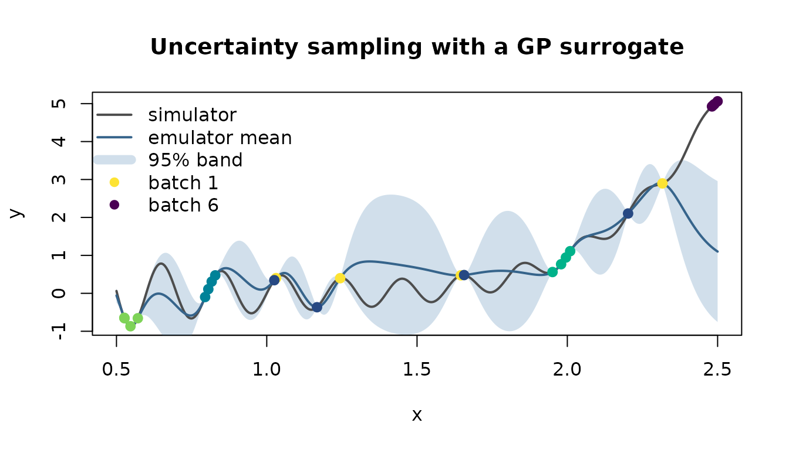
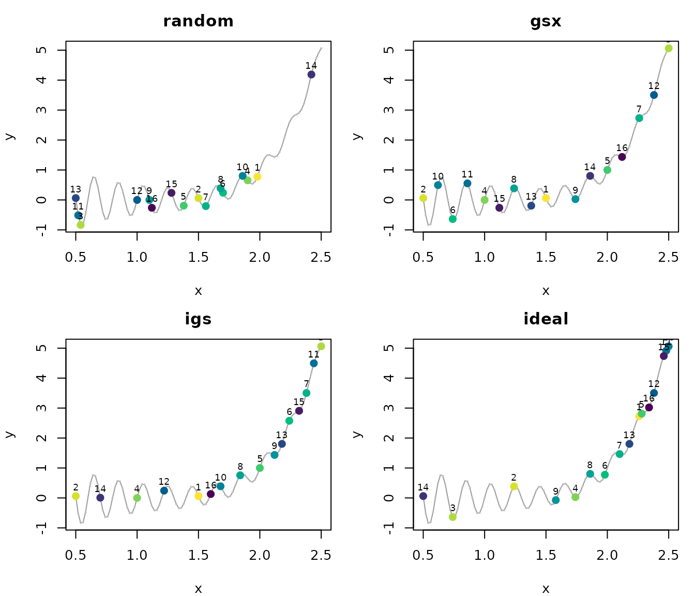
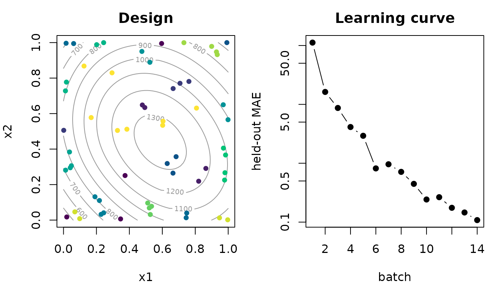
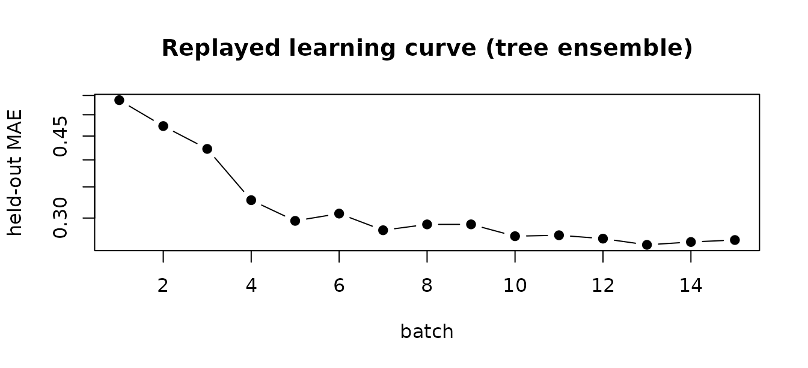
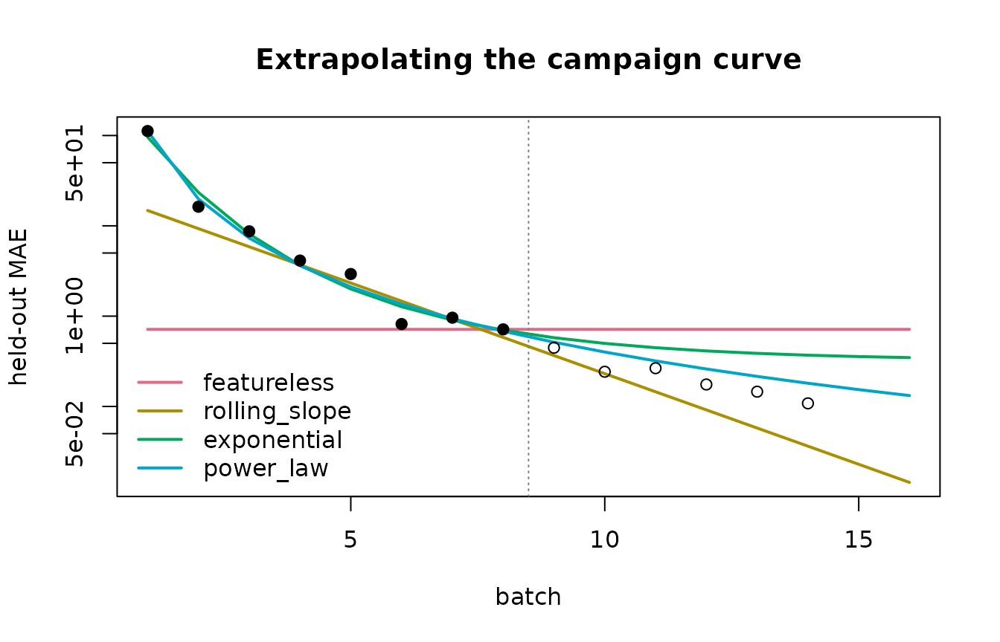
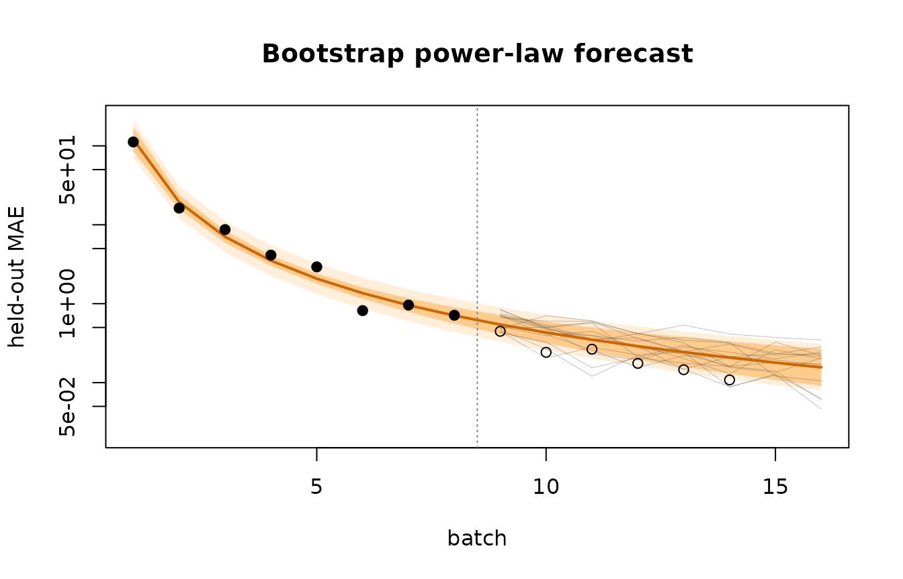
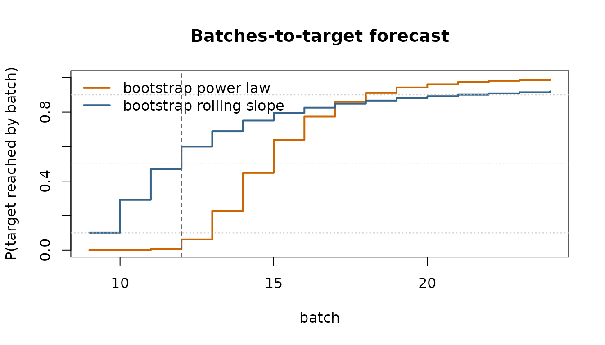

Introduction
celecx (Computer Experiment LEarning Curve
eXtrapolation) provides infrastructure for batch-sequential computer
experiments, that is, for settings where an expensive simulator is
evaluated in successive batches and a regression model – the
surrogate or emulator – is fit to the accumulating
results (Sacks et al., 1989; Santner et al., 2018). Because every
evaluation has a cost, two questions structure such a campaign:
- Which configurations should be evaluated next, so that the surrogate improves as quickly as possible?
- How many further evaluations will be needed before the surrogate reaches a desired level of quality?
The first question is the classical active-learning, or sequential
design-of-experiments, question (Settles, 2009). The second question is
usually answered informally, by looking at a plot of model error against
sample size and extending the trend by eye. celecx treats
both questions as first-class problems. It provides an active-learning
toolkit that runs sequential designs and records their history, and it
turns the resulting learning curve – surrogate quality as a
function of the number of evaluated batches – into an ordinary
supervised learning problem, so that competing extrapolation methods can
be trained, compared, and used for principled “batches to target”
forecasts.
This vignette takes both halves in turn. Sections 2 to 4 introduce the active-learning machinery: a first run on a continuous domain, the interchangeable components behind the user-facing interface, and pool-based active learning with the standard methods from the literature. Sections 5 to 8 then develop the learning-curve side on a single running example, a two-dimensional simulation campaign: recording the curve, extrapolating it, evaluating the extrapolators against each other, and finally converting a forecast into a stopping decision.
The surrounding ecosystem
celecx builds on the mlr3 ecosystem and
reuses its vocabulary throughout. The following summary should suffice
to read this vignette; the packages’ own documentation covers the
details.
-
paradoxdescribes parameter spaces. AParamSetis a collection of typed, possibly bounded parameters, constructed withps()and the generatorsp_dbl(),p_int(),p_fct(), andp_lgl(). Parameter sets appear in two roles here: as the domain of a simulator (which inputs are admissible) and as its codomain (which outputs it produces, together with tags declaring what should be done with them). -
bbotkprovides the black-box optimization backbone: anObjectivecouples an evaluation function with its domain and codomain, anArchiverecords all evaluated configurations together with their outcomes and batch numbers, and aTerminatordecides when a run stops.celecxextends this toolkit towards pure learning: codomain targets may carry the tag"learn"instead of"minimize"or"maximize", meaning that the output is observed and modelled but no best point is sought, and theSearchInstanceclass accepts such objectives. -
mlr3contributes the supervised-learning framework of tasks, learners, predictions, measures, and resampling schemes. It is used on two levels: regression learners (LearnerRegr) serve as surrogates during active learning, andcelecxregisters a dedicated task type"lce"under which learning curves themselves become tasks and extrapolation methods become learners. -
mlr3mbosupplies the surrogate and acquisition-function conventions from model-based optimization. ASurrogateLearnerbinds a regression learner to an archive, and anAcqFunctionscores candidate points;celecxreuses both abstractions for active learning and registers its own acquisition functions.
Most objects in this ecosystem are R6 classes with
reference semantics: assigning an object to a second variable does not
copy it, and modifications are visible through every reference. Where an
independent copy is needed, $clone(deep = TRUE) creates
one; the celecx classes clone defensively wherever aliasing
would be surprising.
Setup
The examples use the Gaussian-process implementation from
DiceKriging (Roustant et al., 2012) via
mlr3learners, regression trees from rpart, and
Latin hypercube sampling from lhs. Attaching
celecx also attaches paradox and
bbotk.
The optimization and learning packages report their progress through
the lgr logging framework. For a quiet document we raise
the logging thresholds; interactive users may prefer to keep the
progress output.
lgr::get_logger("bbotk")$set_threshold("warn")
lgr::get_logger("mlr3")$set_threshold("warn")
lgr::get_logger("mlr3mbo")$set_threshold("warn")Active learning on a continuous domain
We begin with a one-dimensional “simulator”, small enough that every aspect of a run can be plotted. Throughout this section the expensive function is the test function of Gramacy and Lee (2012), a damped oscillation superimposed on a quartic trend:
simulator_1d <- function(x) {
sin(10 * pi * x) / (2 * x) + (x - 1)^4
}Defining the objective
The simulator is wrapped as a bbotk::Objective. The
domain states that the single input x ranges over \([0.5, 2.5]\); the codomain states that the
simulator returns one numeric output y, and the tag
"learn" declares our intent: we want to learn the
input–output relationship everywhere, not to locate an extremum.
objective_1d <- ObjectiveRFun$new(
fun = function(xs) list(y = simulator_1d(xs$x)),
domain = ps(x = p_dbl(lower = 0.5, upper = 2.5)),
codomain = ps(y = p_dbl(tags = "learn"))
)
objective_1d$eval(list(x = 1.2))
#> $y
#> [1] 0.0016ObjectiveRFun evaluates one configuration at a time;
ObjectiveRFunDt is the batch-wise variant for functions
that can process a whole data.table of configurations at
once. Codomains with "minimize" or "maximize"
tags remain admissible – the same machinery can drive model-based
optimization – but this vignette concentrates on the pure learning
case.
Running active learning
optimize_active() is the highest-level entry point.
Given an objective and an evaluation budget, it constructs an
active-learning optimizer, runs it, and returns the objects needed for
analysis. As the surrogate we use Gaussian-process regression, the
canonical emulator for smooth computer experiments;
nugget.stability guards against numerical issues and
trace = FALSE silences the underlying optimizer.
km_learner <- function() {
lrn("regr.km", covtype = "matern5_2", nugget.stability = 1e-8,
control = list(trace = FALSE))
}
set.seed(1L)
result_1d <- optimize_active(
objective = objective_1d,
n_evals = 24L,
learner = km_learner(),
se_method = "auto",
batch_size = 4L,
n_candidates = 200L
)Behind this call, the following loop ran. First, an initial design
was evaluated; by default it has \(4 \cdot
d\) points for a \(d\)-dimensional search space, here four.
Then, until the budget of n_evals = 24 evaluations was
exhausted: the Gaussian process was refit on all evaluations so far,
n_candidates = 200 candidate points were sampled from the
domain, each candidate was scored by the surrogate’s predictive standard
deviation, and the batch_size = 4 highest-scoring
candidates were evaluated as the next batch. This is uncertainty
sampling, the default strategy: it queries the simulator where the
current model is least certain.
Since the Gaussian process predicts its own standard errors,
se_method = "auto" used them directly. The budget was
expressed as a maximal number of evaluations for convenience; the
terminator argument accepts any
bbotk::Terminator (for example
trm("run_time")) for richer stopping rules.
The result objects
The returned list carries the SearchInstance – the
problem description together with the archive – and the optimizer.
result_1d$instance
#> <SearchInstance>
#> * Objective: function
#> * Search space: 1 parameters
#> * Terminator: TerminatorEvals
#> * Evaluations: 24
#> * Batches: 6
#> * Terminated: TRUE
#> * Goal: learnThe archive is the central data structure of a run: one row per evaluated configuration, with the inputs, the observed output, and the batch in which the evaluation happened.
head(result_1d$instance$archive$data[, .(x, y, batch_nr)], 8L)
#> x y batch_nr
#> <num> <num> <int>
#> 1: 1.0310173 0.4012485 1
#> 2: 1.2442478 0.3988645 1
#> 3: 1.6457067 0.4748981 1
#> 4: 2.3164156 2.8966682 1
#> 5: 0.5261552 -0.6454809 2
#> 6: 0.5267807 -0.6574871 2
#> 7: 0.5466624 -0.8673816 2
#> 8: 0.5710812 -0.6565903 2The optimizer keeps its surrogate, so the final model is immediately
available as an emulator. Its $predict() method returns
predictive means and standard errors for arbitrary input tables.
emulator <- result_1d$optimizer$surrogates$model
grid_1d <- data.table(x = seq(0.5, 2.5, length.out = 400L))
prediction_1d <- emulator$predict(grid_1d)
str(prediction_1d)
#> List of 2
#> $ mean: num [1:400] -0.0571 -0.1713 -0.288 -0.4048 -0.5182 ...
#> $ se : num [1:400] 0.09769 0.06592 0.03944 0.01924 0.00611 ...Figure 1 summarizes the run: the true function, the emulator with its 95% credible band, and the evaluated points shaded by batch number. The batches take turns between the two difficult parts of the function – the oscillatory left, whose fine structure the model cannot yet interpolate, and the steep right flank – because each refit moves the widest part of the credible band elsewhere. Within a batch the four points cluster tightly, a consequence of greedy batch construction that Section 3.3 returns to.
archive_1d <- result_1d$instance$archive$data
batch_colors <- hcl.colors(max(archive_1d$batch_nr), "Viridis", rev = TRUE)
plot(grid_1d$x, simulator_1d(grid_1d$x), type = "n",
xlab = "x", ylab = "y", main = "Uncertainty sampling with a GP surrogate")
polygon(c(grid_1d$x, rev(grid_1d$x)),
c(prediction_1d$mean + 1.96 * prediction_1d$se,
rev(prediction_1d$mean - 1.96 * prediction_1d$se)),
col = adjustcolor("steelblue", alpha.f = 0.25), border = NA)
lines(grid_1d$x, simulator_1d(grid_1d$x), lwd = 2, col = "grey30")
lines(grid_1d$x, prediction_1d$mean, lwd = 2, col = "steelblue4")
points(archive_1d$x, archive_1d$y, pch = 19, cex = 1.1,
col = batch_colors[archive_1d$batch_nr])
legend("topleft",
legend = c("simulator", "emulator mean", "95% band", "batch 1", sprintf("batch %i", max(archive_1d$batch_nr))),
col = c("grey30", "steelblue4", adjustcolor("steelblue", alpha.f = 0.25),
batch_colors[1L], batch_colors[length(batch_colors)]),
lwd = c(2, 2, 8, NA, NA), pch = c(NA, NA, NA, 19, 19), bty = "n")
Figure 1: Active learning on the one-dimensional test function. Points show evaluated configurations, shaded by batch; the shaded region is the emulator’s 95% credible band after the final batch.
The components behind the interface
optimize_active() delegates the construction of its
optimizer to the factory optimizer_al(), and every argument
beyond the objective and the budget is in fact an argument of that
factory. Constructing the optimizer explicitly makes the structure of
the method visible and allows the same configured strategy to be reused,
inspected, or embedded in larger experiments. The factory exposes three
groups of choices: how the surrogate quantifies uncertainty, how
candidates are generated, and how a batch is assembled from scored
candidates.
tree_optimizer <- optimizer_al(
learner = lrn("regr.rpart", minsplit = 2L, cp = 0),
se_method = "bootstrap",
n_bootstrap = 12L,
batch_size = 2L,
n_candidates = 200L,
candidate_sampler = clx_sps("lhs"),
multipoint_method = "greedy"
)Surrogates and standard errors
Uncertainty sampling needs predictive standard errors, but many
attractive regression models do not provide them natively. The
se_method argument covers the three common situations:
-
"auto"uses the learner’s native"se"predict type when available, as withregr.kmabove, and falls back to"bootstrap"otherwise; -
"bootstrap"wraps the learner inLearnerRegrBootstrapSE, which trains an ensemble ofn_bootstrapmodels on bootstrap resamples and reports the ensemble mean and standard deviation; -
"quantile"wraps a quantile-regression learner inLearnerRegrQuantileSE, which converts an inter-quantile range into a standard error.
Both wrappers are ordinary registered learners
(lrn("regr.bootstrap_se"),
lrn("regr.quantile_se")) and can be used outside active
learning as well. In the configuration above, a regression tree – a
model with no notion of predictive variance – becomes usable for
uncertainty sampling through a twelve-member bootstrap ensemble.
Candidate generation
In each proposal round the acquisition function scores a finite set
of n_candidates candidate points, and the
candidate_sampler determines how this set is drawn from the
domain. Samplers are SpaceSampler objects, collected in
their own dictionary with the sugar constructors clx_sps()
and clx_spss() (the clx_ prefix marks
celecx sugar, in analogy to mlr3’s
lrn() and msr()):
as.data.table(mlr_space_samplers)[, .(key, label)]
#> Key: <key>
#> key label
#> <char> <char>
#> 1: chain Chained Space Sampler
#> 2: conditional Conditional Space Sampler
#> 3: gsx GSx Space Sampler
#> 4: kmeans K-Means Space Sampler
#> 5: kmedoids K-Medoids Space Sampler
#> 6: lhs LHS Space Sampler
#> 7: relational_kmeans Relational K-Means Space Sampler
#> 8: sobol Sobol Space Sampler
#> 9: uniform Uniform Space SamplerThe configuration above replaces the default uniform sampling by a
Latin hypercube design, matching the common practice of ranking
space-filling candidates by model uncertainty. Space-filling
(lhs, sobol), geometric (gsx, the
farthest-point strategy), and cluster-based (kmeans,
kmedoids) samplers are interchangeable here, and the same
objects also serve as initial-design generators.
Batch construction
When batch_size exceeds one, taking the top-scoring
candidates (“greedy”) risks proposing near-duplicates, since
neighbouring points have similar acquisition scores. The
multipoint_method argument offers three sequential
alternatives: "local_penalization" discounts scores near
already-selected points (González et al., 2016),
"diversity" adds an explicit distance-based diversity term,
and "constant_liar" inserts pseudo-observations at selected
points and rescores, following Ginsbourger et al. (2010). The tightly
clustered same-batch points in Figure 1 show the phenomenon these
methods address; for the small batches used in this vignette the greedy
choice remains adequate, and we keep it.
Running a configured optimizer
A configured optimizer is passed to optimize_active() in
place of the learner arguments. The run below repeats the experiment of
Section 2 with the tree ensemble, a smaller batch size, and a larger
budget; we will return to its archive in Section 5.
set.seed(2L)
result_tree <- optimize_active(
objective = objective_1d,
n_evals = 32L,
optimizer = tree_optimizer
)
result_tree$instance
#> <SearchInstance>
#> * Objective: function
#> * Search space: 1 parameters
#> * Terminator: TerminatorEvals
#> * Evaluations: 32
#> * Batches: 15
#> * Terminated: TRUE
#> * Goal: learnUnder the hood: OptimizerAL
The factory itself only wires together components of the
OptimizerAL class, and the same wiring can be written out
explicitly. An OptimizerAL owns named surrogates
and acquisition functions, an initial-design sampler,
and a proposer that turns the current state into the next
batch; proposers refer to surrogates and acquisition functions by their
registry names. The following construction is, up to a technicality,
what optimizer_al() assembled above (the factory
additionally wraps the samplers so that the same optimizer serves both
continuous domains and the finite pools of Section 4).
se_learner <- lrn("regr.bootstrap_se", learner = lrn("regr.rpart", minsplit = 2L, cp = 0))
se_learner$param_set$set_values(n_bootstrap = 12L)
se_learner$predict_type <- "se"
optimizer_manual <- OptimizerAL$new(
proposer = ALProposerScore$new(
acq_id = "sd",
surrogate_id = "model",
candidate_sampler = clx_sps("lhs"),
n_candidates = 200L
),
surrogates = list(
model = mlr3mbo::SurrogateLearner$new(learner = se_learner, archive = NULL)
),
acq_functions = list(sd = mlr3mbo::acqf("sd")),
init_sampler = clx_sps("uniform"),
result_assigner = ResultAssignerNull$new()
)
optimizer_manual$param_set$set_values(batch_size = 2L)
optimizer_manual
#>
#> ── <OptimizerAL> - Active Learning ─────────────────────────────────────────────
#> • Parameters: batch_size=2, replace_samples=never, proposer.n_candidates=200,
#> proposer.acq_fit_scope=global, surrogate_model.catch_errors=TRUE,
#> surrogate_model.impute_method=random
#> • Parameter classes: <ParamDbl>, <ParamInt>, <ParamFct>, <ParamLgl>, and
#> <ParamUty>
#> • Properties: dependencies and single-crit
#> • Packages: bbotk, lhs, mlr3, celecx, and rpartThe print output shows how the components’ configuration surfaces in
the optimizer’s parameter set under prefixes such as
proposer. and surrogate_model.. This
decomposition is also the extension interface: a new active-learning
method is typically a new AcqFunction (possibly building on
the distance-aware AcqFunctionDist family and an
ALDistance from the mlr_al_distances
dictionary, which includes a Gower distance for mixed
continuous–categorical spaces) or a new ALProposer, wired
exactly as above. The proposer classes shipped with the package –
ALProposerScore, ALProposerSequentialScore,
ALProposerSequentialReference,
ALProposerPseudoLabel, and the round-robin
ALProposerPortfolio – cover single-pass scoring, the
sequential batch heuristics of Section 3.3, distance-based rescoring,
pseudo-label updates, and method combination.
Active learning on a finite pool
So far, candidates could be placed anywhere in the domain. In many applications the choice is instead restricted to a finite pool of configurations: a library of prepared meshes or material compositions, a factorial catalogue of admissible settings, or – particularly relevant for method development – a dataset of already-computed simulations on which an active-learning strategy is to be replayed as if the outcomes were still unknown. Pool-based active learning is also where the best-known methods from the regression active-learning literature are formulated.
Pool objectives
ObjectiveDataset wraps a pre-evaluated table as an
objective that evaluates by lookup and rejects configurations outside
the table. We discretize the simulator of Section 2 into a pool of 101
candidate runs:
pool <- data.table(x = seq(0.5, 2.5, length.out = 101L))
pool[, y := simulator_1d(x)]
objective_pool <- ObjectiveDataset$new(
dataset = pool,
domain = ps(x = p_dbl(lower = 0.5, upper = 2.5)),
codomain = ps(y = p_dbl(tags = "learn"))
)Such objectives carry the property "pool_restricted",
and OptimizerAL reacts to it: initial designs and candidate
sets are then drawn from the not-yet-evaluated pool rows rather than
from the continuous domain, so the optimizers of the previous sections
work unchanged. (By default an evaluated pool row is never proposed
again; the optimizer’s replace_samples parameter relaxes
this.) For on-demand evaluation restricted to a candidate list,
ObjectivePoolRFun and ObjectivePoolWrapper
provide the same behaviour around a live function.
Named methods from the literature
optimizer_pool_al() constructs the standard pool-based
methods, again as OptimizerAL wirings:
method |
Strategy | Reference | Learner used |
|---|---|---|---|
"random" |
uniform random sampling | – | none |
"gsx" |
greedy sampling in input space | Wu et al. (2019) | none |
"gsy" |
greedy sampling in output space | Wu et al. (2019) | predictions |
"igs" |
improved greedy sampling, input \(\times\) output | Wu et al. (2019) | predictions |
"qbc" |
query by committee via bootstrap disagreement | Seung et al. (1992); RayChaudhuri and Hamey (1995) | committee |
"ideal" |
inverse-distance weighted residuals plus exploration | Bemporad (2023) | predictions |
GSx spreads evaluations by always taking the pool point farthest from
the evaluated set; it needs no model at all. GSy transfers the same
greedy logic to the response scale, preferring candidates whose
predicted output differs most from all observed outputs, and
iGS combines both distances multiplicatively. QBC queries where a
bootstrap committee of models disagrees most, and IDEAL scores
candidates by inverse-distance-weighted residuals together with a
geometric exploration term whose weight is set by delta.
Each method comes with its customary initialization, which
init_method can override ("gsx",
"random", or "kmeans", the latter selecting
cluster-representative pool points).
Comparing selection behaviour
We run four of the methods on the pool with identical budgets: sixteen evaluations, of which the first four form the initial design. The model-based methods use the Gaussian process as their learner.
pool_optimizers <- list(
random = optimizer_pool_al("random", n_init = 4L),
gsx = optimizer_pool_al("gsx", n_init = 4L),
igs = optimizer_pool_al("igs", learner = km_learner(), n_init = 4L),
ideal = optimizer_pool_al("ideal", learner = km_learner(), n_init = 4L)
)
pool_results <- list()
for (method in names(pool_optimizers)) {
set.seed(4L)
pool_results[[method]] <- optimize_active(
objective = objective_pool,
n_evals = 16L,
optimizer = pool_optimizers[[method]]
)
}Figure 2 shows which pool points each method selected, numbered by evaluation order. Random sampling scatters without regard to geometry, and GSx produces a near-equispaced space-filling sequence. The model-based methods behave differently: iGS and IDEAL both shift effort towards the right half of the domain, where the steep trend produces large output differences and large residuals, respectively.
plot_pool_run <- function(result, title) {
archive <- result$instance$archive$data
order_colors <- hcl.colors(nrow(archive), "Viridis", rev = TRUE)
plot(pool$x, pool$y, type = "l", col = "grey60",
xlab = "x", ylab = "y", main = title)
points(pool$x, pool$y, pch = 16, cex = 0.35, col = "grey75")
points(archive$x, archive$y, pch = 19, cex = 1.1, col = order_colors)
text(archive$x, archive$y, labels = seq_len(nrow(archive)), pos = 3,
cex = 0.7, offset = 0.35)
}
old_par <- par(mfrow = c(2, 2), mar = c(4, 4, 2.5, 1))
for (method in names(pool_results)) {
plot_pool_run(pool_results[[method]], method)
}
Figure 2: Selection behaviour of four pool-based methods on the same candidate pool. Numbers give the evaluation order; the first four points are the initial design.
par(old_par)Which of these strategies actually learns fastest cannot be read off a selection plot; it is a question about the resulting model quality over time. That question leads directly to the second half of the package.
Learning curves
An active-learning run does not usually end because the model has
become good enough; it ends because the budget is exhausted. The
economically relevant question during a campaign is prospective: given
how quality has developed so far, how many further batches will be
needed to reach the target? The remainder of this vignette develops the
celecx answer on a single running example. The first step,
taken in this section, is to make “quality so far” a concrete object:
one surrogate-performance value per evaluated batch, recorded during or
after the run.
A two-dimensional simulation campaign
The running example is a smooth response surface over \([0, 1]^2\), two broad overlapping rises on a mild trend, standing in for, say, a simulated process yield over two design parameters. We aim for an emulator whose mean absolute error, over the whole design region, falls below a set target.
simulator_2d <- function(x1, x2) {
1000 * (exp(-2 * ((x1 - 0.35)^2 + (x2 - 0.6)^2)) +
0.5 * exp(-3 * ((x1 - 0.85)^2 + (x2 - 0.15)^2)) +
0.3 * x1)
}
objective_2d <- ObjectiveRFun$new(
fun = function(xs) list(y = simulator_2d(xs$x1, xs$x2)),
domain = ps(x1 = p_dbl(0, 1), x2 = p_dbl(0, 1)),
codomain = ps(y = p_dbl(tags = "learn"))
)Measuring surrogate quality requires a held-out regression task on
which the surrogate is scored. In a synthetic study we can afford a
dense grid of true function values; in a real campaign the same role is
played by whatever reference data are available, for example a reserved
set of past simulator runs. The held-out task is an ordinary
mlr3 regression task:
test_grid <- CJ(x1 = seq(0, 1, length.out = 24L), x2 = seq(0, 1, length.out = 24L))
test_grid[, y := simulator_2d(x1, x2)]
test_task_2d <- as_task_regr(test_grid, target = "y", id = "held_out_2d")Recording the curve online
CallbackSurrogatePerformance hooks into the run and,
after every evaluated batch including the initial design, scores a named
surrogate of the optimizer on the held-out task. The callback is
retrieved from the callback dictionary via clbk();
surrogate_id = "model" refers to the surrogate registry of
optimizer_al(), and any list of regression measures can be
tracked.
progress <- clbk("celecx.surrogate_performance",
surrogate_id = "model",
task = test_task_2d,
measures = list(mae = msr("regr.mae"), rsq = msr("regr.rsq"))
)
set.seed(3L)
result_campaign <- optimize_active(
objective = objective_2d,
n_evals = 60L,
learner = km_learner(),
se_method = "auto",
batch_size = 4L,
n_candidates = 400L,
callbacks = list(progress)
)The campaign evaluated an initial design of eight points (\(4 \cdot d\) with \(d = 2\)) followed by thirteen batches of four simulator runs each. The callback accumulated one row per batch:
progress$data[, .(batch_nr, n_evals, mae = signif(mae, 3), rsq = round(rsq, 4))]
#> batch_nr n_evals mae rsq
#> <int> <int> <num> <num>
#> 1: 1 8 112.000 0.2741
#> 2: 2 12 16.300 0.9844
#> 3: 3 16 8.690 0.9961
#> 4: 4 20 4.120 0.9987
#> 5: 5 24 2.930 0.9992
#> 6: 6 28 0.817 1.0000
#> 7: 7 32 0.961 1.0000
#> 8: 8 36 0.714 1.0000
#> 9: 9 40 0.447 1.0000
#> 10: 10 44 0.242 1.0000
#> 11: 11 48 0.265 1.0000
#> 12: 12 52 0.175 1.0000
#> 13: 13 56 0.146 1.0000
#> 14: 14 60 0.108 1.0000The two measures tell complementary stories. \(R^2\) saturates almost immediately – it exceeds \(0.999\) within a handful of batches – while the mean absolute error keeps falling by orders of magnitude long after that. For emulator construction, where pointwise accuracy matters, the absolute error is the more informative quantity, and we use the MAE curve from here on. Figure 3 shows the campaign. The design ends up close to space-filling – for a surface this smooth, predictive uncertainty is governed mainly by data density – and the error decays over roughly three orders of magnitude, approximately linearly on the logarithmic scale with a gradually flattening slope.
archive_campaign <- result_campaign$instance$archive$data
n_campaign_batches <- max(archive_campaign$batch_nr)
campaign_colors <- hcl.colors(n_campaign_batches, "Viridis", rev = TRUE)
old_par <- par(mfrow = c(1, 2), mar = c(4, 4, 2.5, 1))
x1_seq <- seq(0, 1, length.out = 60L)
x2_seq <- seq(0, 1, length.out = 60L)
contour(x1_seq, x2_seq, outer(x1_seq, x2_seq, simulator_2d),
nlevels = 10, col = "grey60", xlab = "x1", ylab = "x2", main = "Design")
points(archive_campaign$x1, archive_campaign$x2, pch = 19, cex = 0.8,
col = campaign_colors[archive_campaign$batch_nr])
plot(progress$data$batch_nr, progress$data$mae, log = "y", type = "b", pch = 19,
xlab = "batch", ylab = "held-out MAE", main = "Learning curve")
Figure 3: The two-dimensional campaign. Left: simulator contours with the evaluated design, shaded by batch. Right: held-out mean absolute error of the emulator after each batch.
par(old_par)The learning-curve task
The callback converts its records into a TaskLCE, the
task type under which learning curves become mlr3 data. Two
arguments matter here. The measure argument selects which
tracked measure becomes the prediction target. The link
argument declares the scale on which forecasting models should represent
the curve and its uncertainty: a MAE is positive and decays
multiplicatively, so we model it on the logarithmic scale, which also
guarantees that predictive distributions respect the lower bound of
zero. The helper lce_link_from_range() suggests a link from
a measure’s theoretical range ("log" for losses on \((0, \infty)\), "logit" for
scores on \((0, 1)\),
"identity" otherwise):
lce_link_from_range(msr("regr.mae")$range)
#> [1] "log"
task_campaign <- progress$task(measure = "mae", link = "log", id = "campaign")
task_campaign
#>
#> ── <TaskLCE> (60x2) ────────────────────────────────────────────────────────────
#> • Target: mae
#> • Properties: -
#> • Features (1):
#> • int (1): batch_nr
#> • Archive features: x1 and x2
#> • Archive targets: yThe task has one row per archive evaluation, not per batch; all rows of a batch share that batch’s performance value. Its single feature is the batch number, which is all that a forecasting model needs at prediction time – forecasting the curve at future batches must not require knowing which points those batches will contain.
head(task_campaign$data(), 3L)
#> mae batch_nr
#> <num> <int>
#> 1: 112.0766 1
#> 2: 112.0766 1
#> 3: 112.0766 1The archive’s input and output columns are nevertheless carried
along, under the dedicated column roles archive_x and
archive_y (accessible via $archive_x_data()
and $archive_y_data()), because advanced extrapolators
inspect the archive during training. For the same reason the task stores
run provenance: the search space and codomain of the originating run,
the regression measure that produced the target
(task_campaign$measure), the candidate pool for pool-based
runs (task_campaign$pool, NULL here), and the
link name (task_campaign$link). Section 6.3 shows a
forecaster that consumes all of it.
Reconstructing curves offline
Attaching the callback requires having thought of it before the run.
replay_surrogate_performance() removes that requirement:
given a finished archive, it refits a surrogate on each batch prefix,
scores it on the held-out task, and returns the same kind of
TaskLCE. Beyond rescuing untracked runs, replay decouples
the curve from the run in two useful ways: the replayed surrogate need
not be the one that drove the design, so several emulator choices can be
scored on the same trace, and runs whose strategy maintained no model at
all – GSx or random sampling, say – still yield learning curves.
The tree-ensemble run of Section 3 was not tracked; we reconstruct its curve now, scoring against a dense held-out grid of the one-dimensional function.
dense_1d <- data.table(x = seq(0.5, 2.5, length.out = 201L))
dense_1d[, y := simulator_1d(x)]
test_task_1d <- as_task_regr(dense_1d, target = "y", id = "held_out_1d")
tree_se_learner <- lrn("regr.bootstrap_se", learner = lrn("regr.rpart", minsplit = 2L, cp = 0))
tree_se_learner$param_set$set_values(n_bootstrap = 12L)
tree_se_learner$predict_type <- "se"
set.seed(21L)
task_tree <- replay_surrogate_performance(
archive = result_tree$instance$archive,
learner = tree_se_learner,
task = test_task_1d,
measures = list(mae = msr("regr.mae")),
link = "log",
id = "surrogate_1d"
)
tree_curve <- unique(task_tree$data()[, .(batch_nr, mae)])
plot(tree_curve$batch_nr, tree_curve$mae, log = "y", type = "b", pch = 19,
xlab = "batch", ylab = "held-out MAE", main = "Replayed learning curve (tree ensemble)")
Figure 4: Learning curve of the Section 3 tree-ensemble run, reconstructed offline by replaying its archive.
This curve looks qualitatively different from the campaign’s: after early gains it flattens out near a plateau, the bias floor of a piecewise-constant model on a smooth function. We keep both tasks; their contrast becomes instructive in Section 7.
Extrapolating learning curves
A TaskLCE is a task, so extrapolation methods are
learners: they train on the observed prefix of a curve and predict
performance at future batch numbers. celecx registers them
under the lce. prefix in the standard learner
dictionary:
grep("^lce\\.", mlr_learners$keys(), value = TRUE)
#> [1] "lce.bootstrap" "lce.conformal"
#> [3] "lce.featureless" "lce.gam"
#> [5] "lce.isotonic" "lce.parametric_exponential"
#> [7] "lce.parametric_log" "lce.parametric_logistic"
#> [9] "lce.parametric_power_law" "lce.rolling_slope"
#> [11] "lce.simulate" "lce.spline_monotone"The families are, in increasing order of structure: featureless
baselines (lce.featureless predicts the best, last, or
average observed value forever); a local trend baseline
(lce.rolling_slope extends a straight line fit to the most
recent batches); parametric curve families from the learning-curve
literature (Viering and Loog, 2023) –
lce.parametric_exponential fits \(f(b) = c + a e^{-kb}\),
lce.parametric_power_law fits \(f(b) = c + a b^{-k}\), and
lce.parametric_log and lce.parametric_logistic
fit logarithmic and sigmoidal shapes; monotone nonparametric fits
(lce.isotonic, and lce.spline_monotone if the
scam package is installed), which impose the shape
constraint without committing to a family; wrappers that endow a base
learner with distributional predictions (lce.bootstrap,
lce.conformal); and the forward-simulation learner
lce.simulate, treated in Section 6.3. All of them fit the
curve on the task’s link scale, here the log scale.
Forecasting mid-campaign
To use the campaign as an honest test bed, we place ourselves at batch 8 – roughly the campaign’s midpoint, MAE just above \(0.7\) – and forecast from there, keeping the remaining batches for comparison. Restricting a task to a batch prefix is a matter of filtering rows:
forecast_batch <- 8L
task_past <- task_campaign$clone(deep = TRUE)
task_past$filter(task_past$row_ids[task_past$batch_nrs <= forecast_batch])
realized <- unique(task_campaign$data()[, .(batch_nr, mae)])We train four point forecasters on the prefix and predict the full
range of batches. Prediction at new batch numbers uses the standard
predict_newdata() mechanism; note that
batch_nr must be supplied as an integer column.
point_learners <- list(
featureless = lrn("lce.featureless"),
rolling_slope = lrn("lce.rolling_slope"),
exponential = lrn("lce.parametric_exponential"),
power_law = lrn("lce.parametric_power_law")
)
batch_grid <- data.table(batch_nr = 1:16L)
point_forecasts <- sapply(point_learners, function(learner) {
learner$train(task_past)
learner$predict_newdata(batch_grid)$response
})
forecast_colors <- hcl.colors(5, "Dark 3")[1:4]
matplot(batch_grid$batch_nr, point_forecasts, log = "y", type = "l", lty = 1,
lwd = 2, col = forecast_colors, ylim = range(realized$mae, point_forecasts),
xlab = "batch", ylab = "held-out MAE",
main = "Extrapolating the campaign curve")
abline(v = forecast_batch + 0.5, lty = 3, col = "grey50")
points(realized[batch_nr <= forecast_batch], pch = 19)
points(realized[batch_nr > forecast_batch], pch = 1)
legend("bottomleft", legend = colnames(point_forecasts), col = forecast_colors,
lwd = 2, bty = "n")
Figure 5: Point forecasts from batch 8. Filled circles are the batches available to the forecasters, open circles the realized continuation.
The four methods embody different beliefs about what comes next, and the figure makes the differences concrete. The featureless baseline (predicting the best value seen so far) denies any further progress. The rolling slope continues the recent log-linear trend indefinitely and therefore predicts the fastest progress. The two parametric families interpolate between these extremes: both admit deceleration, but the exponential’s fixed asymptote, estimated from an early prefix, is pessimistic about the later batches, while the power law’s slower decay tracks the realized continuation more closely here. None of this is specific to the example – which family extrapolates best depends on the curve, which is exactly why Section 7 treats the choice as an empirical model-selection problem.
Distributional forecasts
Point forecasts are rarely enough: a stopping decision needs to know
how certain the forecast is. LearnerLCE objects
therefore support distributional predict types beyond
"response":
-
"se"adds two standard errors on the link scale:se, the total predictive standard deviation of a future realized curve value, andse_epistemic, the narrower uncertainty of the mean curve itself. The distinction matters because a realized batch value scatters around the mean curve with residual noise even if the curve were known exactly. -
"quantiles"returns predictive quantiles on the natural scale. -
"samples"returns joint sample paths, which preserve the dependence between future batches. -
"target_reached"returns, per batch, the probability that a configurable target has been reached.
The parametric learners derive se analytically from the
curve fit. A more assumption-averse route is the residual-bootstrap
wrapper lce.bootstrap, which refits its base learner on
many resampled versions of the curve and reads uncertainty off the
spread of the refits; being sample-based, it supports all predict types
including joint paths. We wrap the power law:
forecaster <- lrn("lce.bootstrap",
learner = lrn("lce.parametric_power_law"),
n_bootstrap = 100L, seed = 1L)
forecaster$predict_type <- "se"
forecaster$train(task_past)
prediction_se <- as.data.table(forecaster$predict_newdata(batch_grid))
tail(cbind(batch_grid, prediction_se[, .(response = signif(response, 3),
se = signif(se, 3), se_epistemic = signif(se_epistemic, 3))]), 4L)
#> batch_nr response se se_epistemic
#> <int> <num> <num> <num>
#> 1: 13 0.243 0.367 0.264
#> 2: 14 0.208 0.383 0.286
#> 3: 15 0.179 0.399 0.307
#> 4: 16 0.156 0.415 0.328On the log link, a central 90% band around the predictive median is obtained as \(\text{response} \cdot \exp(\pm z_{0.95} \cdot \text{se})\). Figure 6 shows the epistemic and total bands together with a handful of joint sample paths, and the realized continuation for reference.
z90 <- qnorm(0.95)
forecaster$predict_type <- "samples"
future_grid <- data.table(batch_nr = (forecast_batch + 1L):16L)
sample_paths <- forecaster$predict_newdata(future_grid)$samples
plot(realized$batch_nr, realized$mae, log = "y", type = "n",
xlim = c(1, 16), ylim = range(realized$mae) * c(0.2, 2),
xlab = "batch", ylab = "held-out MAE", main = "Bootstrap power-law forecast")
polygon(c(batch_grid$batch_nr, rev(batch_grid$batch_nr)),
c(prediction_se$response * exp(z90 * prediction_se$se),
rev(prediction_se$response * exp(-z90 * prediction_se$se))),
col = adjustcolor("darkorange", alpha.f = 0.15), border = NA)
polygon(c(batch_grid$batch_nr, rev(batch_grid$batch_nr)),
c(prediction_se$response * exp(z90 * prediction_se$se_epistemic),
rev(prediction_se$response * exp(-z90 * prediction_se$se_epistemic))),
col = adjustcolor("darkorange", alpha.f = 0.35), border = NA)
matlines(future_grid$batch_nr, sample_paths[, 1:15],
lty = 1, lwd = 0.5, col = adjustcolor("grey30", alpha.f = 0.35))
lines(batch_grid$batch_nr, prediction_se$response, lwd = 2, col = "darkorange3")
abline(v = forecast_batch + 0.5, lty = 3, col = "grey50")
points(realized[batch_nr <= forecast_batch], pch = 19)
points(realized[batch_nr > forecast_batch], pch = 1)
Figure 6: Distributional forecast of the bootstrap power law from batch 8: central 90% bands from the epistemic (dark) and total (light) standard errors, thin lines showing 15 joint sample paths of the realized future curve, and the realized continuation (open circles).
The alternative wrapper lce.conformal calibrates a
constant-width band on a hold-out suffix of the training batches by
split-conformal inference, trading the Gaussian working assumption for
finite-sample marginal coverage at its configured level.
Policy-aware forecasting by forward simulation
All learners so far look only at the shape of the observed curve.
lce.simulate uses the run provenance stored in the task
instead: at training time it fits an oracle regression model on
the archive’s input–output pairs, and at prediction time it re-runs the
configured active-learning optimizer forward from the training archive,
using the oracle in place of the simulator, and scores the simulated
surrogate after each simulated batch. Its forecast is thus not a curve
family but the outcome of actually executing the acquisition policy on
the best available stand-in for the truth – connecting the forecasting
half of the package back to the active-learning half. The optimizer
configuration and the oracle are supplied at construction; measure,
search space, and pool are read from the task.
sim_forecaster <- lrn("lce.simulate",
optimizer = optimizer_al(
learner = km_learner(),
se_method = "auto",
batch_size = 4L,
n_candidates = 400L
),
oracle_learner = km_learner(),
n_restarts = 3L,
seed = 1L
)
sim_forecaster$train(task_past)
sim_prediction <- sim_forecaster$predict_newdata(future_grid)
sim_table <- data.table(
batch_nr = future_grid$batch_nr,
simulated = signif(sim_prediction$response, 3)
)
merge(sim_table, realized[, .(batch_nr, realized = signif(mae, 3))],
by = "batch_nr", all.x = TRUE)
#> Key: <batch_nr>
#> batch_nr simulated realized
#> <int> <num> <num>
#> 1: 9 0.1510 0.447
#> 2: 10 0.1380 0.242
#> 3: 11 0.0558 0.265
#> 4: 12 0.0637 0.175
#> 5: 13 0.0576 0.146
#> 6: 14 0.0427 0.108
#> 7: 15 0.0394 NA
#> 8: 16 0.0206 NAThe simulated curve reproduces the shape of the continuation but sits below the realized values. This bias is inherent to the construction: the forecast scores the simulated surrogate against the oracle’s own predictions, and the oracle – fit on 36 points – is smoother than the true response surface, so the simulated problem is easier than the real one. The simulation forecast is therefore most valuable where the curve-fitting learners are blind by construction: it reacts to the acquisition policy, the batch size, and the candidate budget, and it produces joint sample paths (one per restart) whose spread reflects the stochasticity of the policy itself.
Evaluating extrapolators
Which forecaster should be trusted for a given campaign? Since
extrapolators are learners, this is a resampling question, answered with
the standard mlr3 tools. Two ingredients are specific to
learning curves: the resampling scheme and the measures.
For resampling, random train–test splits would leak future batches
into training. ResamplingLCE
(rsmp("lce.expanding_cv")) instead splits by whole batches
in temporal order: each fold trains on all batches up to a moving
cut-off and tests on the following horizon batches, with
the cut-off advancing by step_size between folds. The first
cut-off, min_train_batches, has deliberately no default,
since results are sensitive to how much history the forecasters see; it
must also respect the learners’ own minima (the parametric families need
a handful of batches, lce.spline_monotone needs five).
The registered measures score per-batch forecasts:
grep("^lce\\.", mlr_measures$keys(), value = TRUE)
#> [1] "lce.coverage" "lce.crps" "lce.interval_score"
#> [4] "lce.mae" "lce.mse" "lce.pinball"
#> [7] "lce.reach_brier" "lce.rmse"lce.mae, lce.mse, and lce.rmse
are point-forecast losses on the natural scale. The distributional
measures read the Gaussian-on-link predictive carried by the
"se" predict type: lce.crps is the closed-form
continuous ranked probability score (a proper score, our headline
distributional criterion), lce.coverage and
lce.interval_score assess central prediction intervals,
lce.pinball scores predicted quantiles, and
lce.reach_brier evaluates the predicted probability of
having reached a target – the decision-oriented criterion matching
Section 8.
We benchmark five forecasters on both learning-curve tasks, with folds forecasting two batches ahead:
bench_learners <- list(
lrn("lce.featureless"),
lrn("lce.rolling_slope", window = 4L),
lrn("lce.parametric_exponential"),
lrn("lce.parametric_power_law"),
lrn("lce.bootstrap", learner = lrn("lce.parametric_power_law"),
n_bootstrap = 100L, seed = 1L)
)
for (learner in bench_learners) {
learner$predict_type <- "se"
}
resampling <- rsmp("lce.expanding_cv",
min_train_batches = 5L, horizon = 2L, step_size = 1L)
set.seed(5L)
benchmark_result <- benchmark(benchmark_grid(
tasks = list(task_campaign, task_tree),
learners = bench_learners,
resamplings = resampling
))
aggregated <- benchmark_result$aggregate(
list(msr("lce.mae"), msr("lce.crps"), msr("lce.coverage"))
)
aggregated[, .(task_id, learner_id,
lce.mae = signif(lce.mae, 3),
lce.crps = round(lce.crps, 3),
lce.coverage = round(lce.coverage, 2))]
#> task_id learner_id lce.mae lce.crps
#> <char> <char> <num> <num>
#> 1: campaign lce.featureless 0.39200 0.522
#> 2: campaign lce.rolling_slope 0.17700 0.294
#> 3: campaign lce.parametric_exponential 0.28900 0.293
#> 4: campaign lce.parametric_power_law 0.18900 0.210
#> 5: campaign lce.bootstrap.lce.parametric_power_law 0.19200 0.234
#> 6: surrogate_1d lce.featureless 0.00739 0.062
#> 7: surrogate_1d lce.rolling_slope 0.01830 0.051
#> 8: surrogate_1d lce.parametric_exponential 0.01570 0.046
#> 9: surrogate_1d lce.parametric_power_law 0.01430 0.037
#> 10: surrogate_1d lce.bootstrap.lce.parametric_power_law 0.01230 0.031
#> lce.coverage
#> <num>
#> 1: 1.00
#> 2: 0.75
#> 3: 0.88
#> 4: 0.88
#> 5: 0.75
#> 6: 1.00
#> 7: 0.83
#> 8: 0.89
#> 9: 1.00
#> 10: 1.00The two tasks reward different beliefs, as anticipated in Section
5.4. On the steadily improving campaign curve, the trend-following
forecasters (rolling slope, power law) clearly beat the featureless
baseline at both point and distributional accuracy. On the plateaued
tree curve the ranking inverts for point forecasts: predicting the best
value seen so far is hard to beat once a curve has flattened, and the
flexible extrapolators pay for occasionally chasing noise – although the
distributional scores still favour the calibrated forecasters. The
practical reading is that no family dominates across traces, and that
the forecaster feeding a costly stopping decision should first be
validated on the trace types it will face; the benchmark above is
precisely that validation, in miniature. (With a single task and
learner, resample() replaces benchmark() in
the usual mlr3 manner.)
From forecasts to decisions: batches to target
The question from the beginning of Section 5 – how many further
batches? – is answered by lce_batches_to_target().
Given a trained forecaster, a future batch grid, and a performance
target, it converts the per-batch predictive distributions into a
distribution over the batch at which the target is first reached,
reporting its quantiles, the full CDF over the grid, and the probability
that the grid never reaches the target at all. The optimization
direction (here: lower is better) is read from the measure stored in the
training task.
Two crossing semantics are available.
crossing = "expected" asks when the mean curve
passes the target – the de-noised notion appropriate for “when will the
model truly be good enough”, computed from se_epistemic.
crossing = "observed" asks when the realized,
noisy curve first dips below the target, the literal stopping time
of a run that halts on its progress plot; being a first-passage property
of a correlated sequence, it requires joint sample paths and hence a
sample-based learner. The observed crossing necessarily happens no later
in distribution than the expected one, since noise can dip below the
target early.
We set the target at a MAE of \(0.2\) and forecast from batch 8, using the bootstrap power law of Section 6.2 and, for contrast, a bootstrap around the rolling slope:
mae_target <- 0.2
b2t_power_law <- lce_batches_to_target(forecaster,
batch_grid = 9:24L, target = mae_target, crossing = "expected")
b2t_power_law_observed <- lce_batches_to_target(forecaster,
batch_grid = 9:24L, target = mae_target, crossing = "observed")
slope_forecaster <- lrn("lce.bootstrap",
learner = lrn("lce.rolling_slope"), n_bootstrap = 100L, seed = 1L)
slope_forecaster$train(task_past)
b2t_slope <- lce_batches_to_target(slope_forecaster,
batch_grid = 9:24L, target = mae_target, crossing = "expected")
rbind(
data.table(forecaster = "power law (expected)", t(b2t_power_law$quantiles),
p_never = round(b2t_power_law$p_never, 3)),
data.table(forecaster = "power law (observed)", t(b2t_power_law_observed$quantiles),
p_never = round(b2t_power_law_observed$p_never, 3)),
data.table(forecaster = "rolling slope (expected)", t(b2t_slope$quantiles),
p_never = round(b2t_slope$p_never, 3))
)
#> forecaster q0.1 q0.5 q0.9 p_never
#> <char> <num> <num> <num> <num>
#> 1: power law (expected) 13 15 18 0.01
#> 2: power law (observed) 12 14 18 0.01
#> 3: rolling slope (expected) 9 12 21 0.08In the campaign that actually continued, the target was first reached in batch 12.
plot(b2t_power_law$grid$batch, b2t_power_law$grid$cdf, type = "s", lwd = 2,
col = "darkorange3", ylim = c(0, 1), xlab = "batch",
ylab = "P(target reached by batch)", main = "Batches-to-target forecast")
lines(b2t_slope$grid$batch, b2t_slope$grid$cdf, type = "s", lwd = 2,
col = "steelblue4")
abline(v = realized[mae <= mae_target, min(batch_nr)], lty = 2, col = "grey40")
abline(h = c(0.1, 0.5, 0.9), lty = 3, col = "grey75")
legend("topleft", legend = c("bootstrap power law", "bootstrap rolling slope"),
col = c("darkorange3", "steelblue4"), lwd = 2, bty = "n")
Figure 7: Batches-to-target forecasts made at batch 8 for a target MAE of 0.2: probability that the target has been reached, per batch, under two forecasters. The vertical line marks the batch in which the continued campaign actually reached the target.
The two forecasters bracket the realized outcome: the rolling slope, extrapolating the recent trend, gives a median of about batch 12 with wide uncertainty and some probability mass on “not within the grid”, while the more cautious power law places its median around batch 15, two to three batches after the realized crossing and with its lower decile just missing it. This residual disagreement is the honest state of knowledge at batch 8, and the benchmark of Section 7 is the tool for deciding which of the two to weight more heavily. Either way the forecast is directly actionable: multiplying batches by the batch size of four converts the answer into simulator evaluations, which can be set against the cost of computing them and the value of reaching the target.
Concluding remarks
The path taken by this vignette is the intended shape of a
celecx analysis. An objective wraps the expensive simulator
(Section 2), an OptimizerAL – assembled by a factory or by
hand – runs batch-sequential active learning on it (Sections 2 to 4), a
callback or an offline replay condenses the run into a
TaskLCE (Section 5), learning-curve learners fit and
extrapolate that task with calibrated uncertainty (Section 6),
resampling and benchmarking select among them (Section 7), and
lce_batches_to_target() turns the selected forecaster into
a stopping decision (Section 8). Because every stage speaks the
mlr3 language, each of them can be swapped out or studied
in isolation: active-learning strategies are optimizers, emulators and
their uncertainty wrappers are regression learners, learning curves are
tasks, and extrapolators are learners with measures and resampling
schemes of their own.
Several parts of the package did not fit into this introduction.
Among the surrogates, wrappers for further Gaussian-process backends
(regr.gpfit, regr.hetgp,
regr.tgp, regr.deepgp) cover heteroscedastic
and nonstationary emulation. Among the pool tools,
ObjectivePoolRFun and ObjectivePoolWrapper
restrict live objectives to candidate lists, and the
ALDistance dictionary (clx_ald()) underlying
the distance-based acquisition functions extends them to mixed
continuous–categorical spaces. Among the forecasters,
lce.parametric_log, lce.parametric_logistic,
lce.isotonic, and lce.spline_monotone provide
further curve shapes, the "quantiles" and
"target_reached" predict types expose the predictive
distribution in other formats, and the measures
lce.pinball, lce.interval_score, and
lce.reach_brier score them. The help pages of the classes
encountered above document these variations, and each dictionary
(mlr_space_samplers, mlr_al_distances, and the
lce. entries of mlr_learners and
mlr_measures) can be listed and explored in the usual
mlr3 fashion.
References
Bemporad, A. (2023). Active learning for regression by inverse distance weighting. Information Sciences, 626, 275–292.
Ginsbourger, D., Le Riche, R., and Carraro, L. (2010). Kriging is well-suited to parallelize optimization. In Computational Intelligence in Expensive Optimization Problems, 131–162. Springer.
González, J., Dai, Z., Hennig, P., and Lawrence, N. (2016). Batch Bayesian optimization via local penalization. In Proceedings of AISTATS 2016, 648–657.
Gramacy, R. B. (2020). Surrogates: Gaussian Process Modeling, Design, and Optimization for the Applied Sciences. CRC Press.
Gramacy, R. B. and Lee, H. K. H. (2012). Cases for the nugget in modeling computer experiments. Statistics and Computing, 22(3), 713–722.
RayChaudhuri, T. and Hamey, L. G. C. (1995). Minimisation of data collection by active learning. In Proceedings of ICNN 1995, 1338–1341.
Roustant, O., Ginsbourger, D., and Deville, Y. (2012). DiceKriging, DiceOptim: Two R packages for the analysis of computer experiments by kriging-based metamodeling and optimization. Journal of Statistical Software, 51(1), 1–55.
Sacks, J., Welch, W. J., Mitchell, T. J., and Wynn, H. P. (1989). Design and analysis of computer experiments. Statistical Science, 4(4), 409–423.
Santner, T. J., Williams, B. J., and Notz, W. I. (2018). The Design and Analysis of Computer Experiments. Second edition. Springer.
Settles, B. (2009). Active learning literature survey. Computer Sciences Technical Report 1648, University of Wisconsin–Madison.
Seung, H. S., Opper, M., and Sompolinsky, H. (1992). Query by committee. In Proceedings of COLT 1992, 287–294.
Viering, T. and Loog, M. (2023). The shape of learning curves: A review. IEEE Transactions on Pattern Analysis and Machine Intelligence, 45(6), 7799–7819.
Wu, D., Lin, C.-T., and Huang, J. (2019). Active learning for regression using greedy sampling. Information Sciences, 474, 90–105.